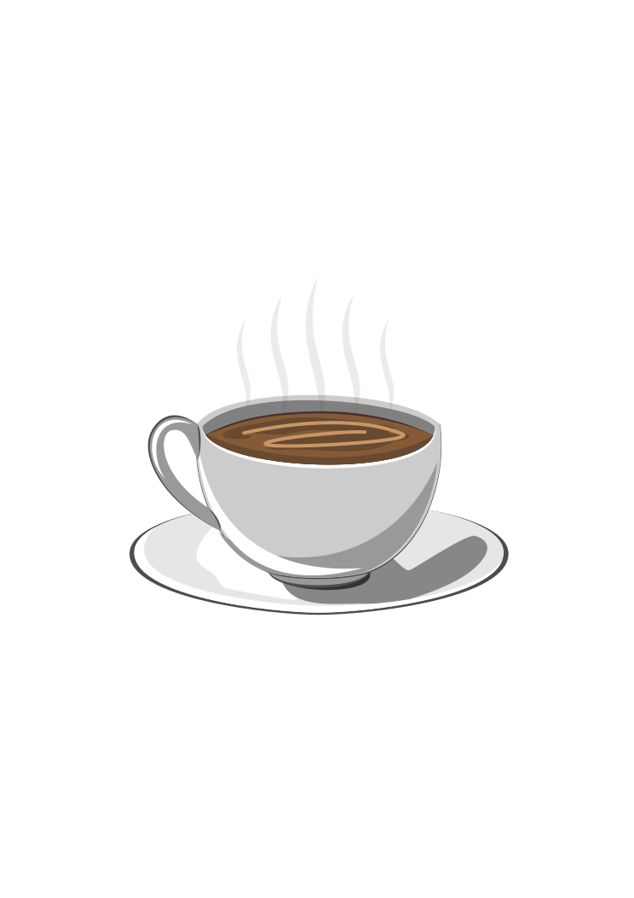

<!--  
    SVG

    É uma marcação, estilo html, mas não é para fazer texto, mas sim para imagens.

    Possuimos elementos para gerar formas

    Para entender melhor
    -Imagem rasterizada X Imagem vetorizada


    -Benefícios
    -Mais leve
    -Mais detalhada
    -Mais acessibilidade e SEO
    -Pode ser editada pelo CSS ou atributos

    -Desvantagens
    -Pode ser mais complicada para trabalhar
    -Quanto mais complexa a imagem, mais difícil o browser consegue trabalhar
    -Navegadores antigos não possuem acesso/suporte a esta tag

    OBS: Para fotorgrafias, ainda prefira utilizar imagens rasterizadas, como: .png, .jpg, .jpeg.

    OBS2: Utilizar o figma para exportar svgs.

    "Canva é o espaço do trabalho no html" exemplo abaixo de width e heigth
       Canva de 250 por 200 

-->

<!-- SVG na prática -->

<!-- <svg>
    <circle cx="125
    " cy="150" r="80" stroke="#056" stroke-width="10" fill="transparent" />
</svg> 

<svg width="250" height="200">
    <rect width="100%" height="100%" fill="transparent" stroke="#055" stroke-width="3" />
</svg>
 -->


<!-- Adicionando arquivo SVG a página externamente -->


<body>
    
</body>